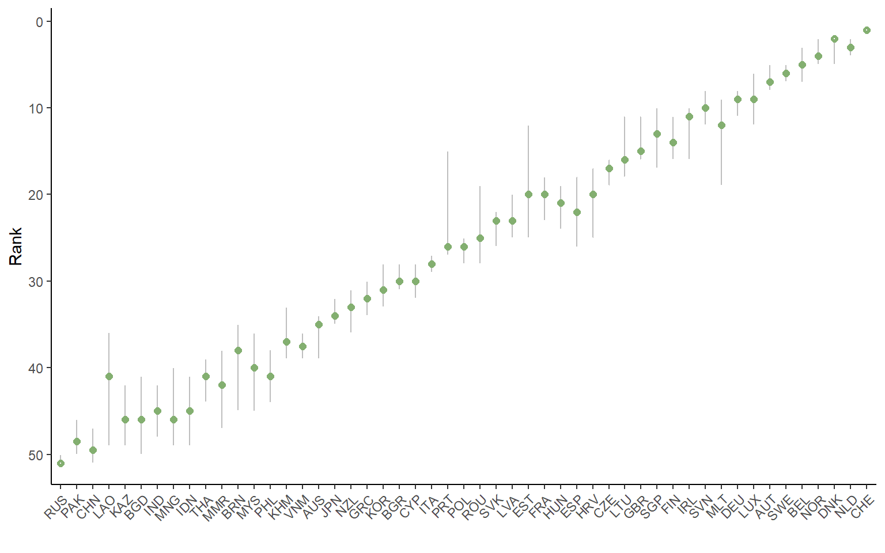
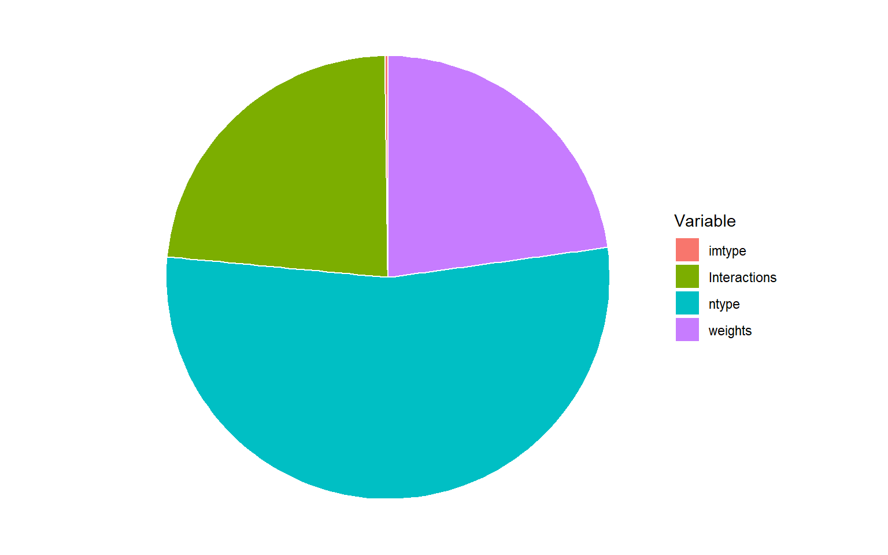
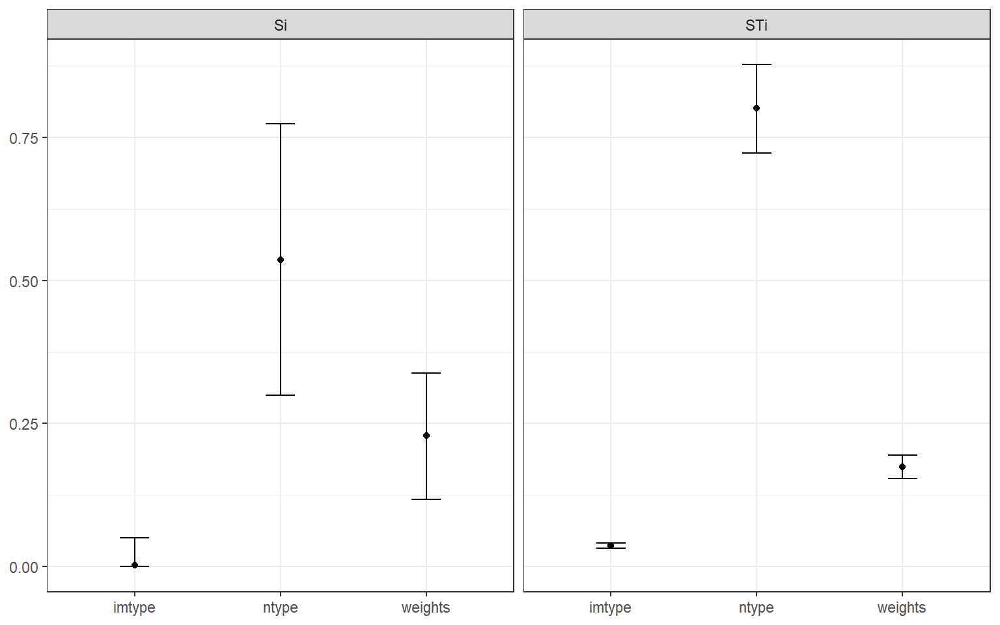

Chapter 14 Sensitivity analysis
Composite indicators, like any model, have many associated uncertainties.
Sensitivity analysis can help to quantify the uncertainty in the scores and rankings of the composite indicator, and to identify which assumptions are driving this uncertainty, and which are less important.
14.1 About
Sensitivity analysis is often confused with uncertainty analysis. Uncertainty analysis involves estimating the uncertainty in the ouputs of a system (here, the scores and ranks of the composite indicator), given the uncertainties in the inputs (here, methodological decisions, weights, etc.). The results of an uncertainty include for example confidence intervals over the ranks, median ranks, and so on.
Sensitivity analysis is an extra step after uncertainty analysis, and estimates which of the input uncertainties are driving the output uncertainty, and by how much. A rule of thumb, known as the Pareto Principle (or the 80/20 Rule) suggests that often, only a small proportion of the input uncertainties are causing the majority of the output uncertainty. Sensitivity analysis allows us to find which input uncertainties are significant (and therefore perhaps worthy of extra attention), and which are not important.
In reality, sensitivity analysis and uncertainty analysis can be performed simultaneously. However in both cases, the main technique is to use Monte Carlo methods. This essentially involves re-calculating the composite indicator many times, each time randomly varying the uncertain variables (assumptions, parameters), in order to estimate the output distributions.
At first glance, one might think that sensitivity analysis can be performed by switching one assumption at a time, using the tools outlined in Adjustments and comparisons. However, uncertainties interact with one another, and to properly understand the impact of uncertainties, one must vary uncertain parameters and assumptions simultaneously.
Sensitivity analysis and uncertainty analysis are large topics and are in fact research fields in their own right. To better understand them, a good starting point is Global Sensitivity Analysis: The Primer, and a recent summary of sensitivity analysis research can be found here.
14.2 Five steps
To perform an uncertainty or sensitivity analysis, one must define several things:
- The system or model (in this case it is a composite indicator, represented as a COIN)
- Which assumptions to treat as uncertain
- The alternative values or distributions assigned to each uncertain assumption
- Which output or outputs to target (i.e. to calculate confidence intervals for)
- Methodological specifications for the sensitivity analysis itself, for example the method and the number of replications to run.
This should dispel the common idea that one can simply “run a sensitivity analysis”. In fact, all of these steps require some thought and attention, and the results of the sensitivity analysis will be themselves dependent on these choices. Let’s go through them one by one.
14.2.1 Specifying the model
First, the system or model. This should be clear: you need to have already built your (nominal) composite indicator in order to check the uncertainties. Usually this would involve calculating the results up to and including the aggregated index. The choices in this model should represent your “best” choices for each methodological step, for example your preferred aggregration method, preferred set of weights, and so on.
14.2.2 Which assumptions to vary
Specifying which assumptions to vary is more complicated. It is impossible to fully quantify the uncertainty in a composite indicator (or any model, for that matter) because there are simply so many sources of uncertainty, ranging from the input data, the choice of indicators, the structure of the index, and all the methodological steps along the way (imputation, treatment, normalisation, etc.). A reasonable approach is to identify specific assumptions and parameters that could have plausible alternatives, and can be practically varied.
The construction of composite indicators in COINr (deliberately) lends itself well to uncertainty analysis, because as we have seen in the Adjustments and comparisons chapter, all the methodological choices used to build the composite indicator are recorded inside the COIN, and changes can be made by simply altering these parameters and calling the regen() function. Sensitivity and uncertainty analysis is simply an extension of this concept - where we create a large number of alternative COINs, each with methodological variations following the distributions assigned to each uncertain assumption.
The upshot here is that (at least in theory) any parameter from any of the construction functions (see again the table in Adjustments and comparisons) can be varied as part of a sensitivity analysis. This includes, for example:
- Inclusion and exclusion of indicators
- Data availability thresholds for screening units
- Alternative choices of denominators
- Alternative imputation methods
- Alternative data treatment, Winsorisation thresholds, skew and kurtosis values, transformations
- Alternative normalisation methods and parameters
- Alternative aggregration methods and weight sets
On top of this, it is possible to randomly perturb weights at each level by a specified noise factor. This is explained in more detail later in this chapter.
The reason that these can be varied in theory is because there may arise conflicts between methodological choices. For example, if a normalisation method results in negative values, we cannot use a default geometric mean aggregation method. For this reason, it is recommended to focus on key uncertainties and start modestly with a sensitivity analysis, working up to a more complex version if required.
14.2.3 Alternative values
Having selected some key uncertain assumptions, we must assign plausible alternative values. For example, let’s say that an uncertain assumption is the normalisation method. By default, we have used min-max, but perhaps other methods could be reasonable alternatives. The question is then, which alternatives to test?
The answer here should not be to blindly apply all possible alternatives available, but rather to select some alternatives that represent plausible alternatives, ruling out any that do not fit the requirements of the index. For example, using rank normalisation is a robust method that neatly deals with outliers but by doing so, also ignores whether a unit is an exceptional performer. This may be good or bad depending on what you want to capture. If it is “good” then it could be considered as an alternative. If it does not fit the objectives, it is not a plausible alternative, so should not be included in the sensitivity analysis.
Finding plausible alternatives is not necessarily an easy task, and we must recall that in any case we will end up with a lower bound on the uncertainty, since we cannot fully test all uncertainties, as discussed previously (we recall that this is the same in any model, not just in composite indicators). Yet, we can still do a lot better than no uncertainty analysis at all.
In the end, for each uncertain parameter, we should end up with a list of alternative plausible values. Note that at the moment, COINr assumes equal probability for all alternatives, i.e. uniform distributions. This may be extended to other distributions in future releases.
14.2.4 Selecting the output
Composite indicators have multidimensional outputs - one value for each unit and for each aggregate or normalised indicator. Typically, the most interesting outputs to look at in the context of a sensitivity analysis are the final index values, and possibly some of the underlying aggregate scores (sub-indexes, pillars, etc.).
COINr allows us to select which inputs to target, and this is explained more below.
14.2.5 SA methodology
Finally, we have to specify what kind of analysis to perform, and how many model runs. Currently, COINr offers either an uncertainty analysis (resulting in distributions over ranks), or a sensitivity analysis (additionally showing which input uncertainties cause the most output uncertainty). As mentioned, sensitivity analysis methodology is a rabbit hole in itself, and interested readers could refer to the references at the beginning of this chapter to find out more.
Sensitivity analysis usually requires more model runs (replications of the composite indicator). Still, composite indicators are fairly cheap to evaluate, depending on the number of indicators and the complexity of the construction. Regardless of whether you run an uncertainty or sensitivity analysis, more model runs is always better because it increases the accuracy of the estimations of the distributions over ranks. If you are prepared to wait some minutes or possibly hour(s), normally this is enough to perform a fairly solid sensitivity analysis.
14.3 Sensitivity in COINr
To run a sensitivity analysis in COINr, the function of interest is sensitivity(). We must follow the steps outlined above, so first, you should have a nominal composite indicator constructed up to and including the aggregation step. Here, we use our old friend the ASEM index.
library(COINr)
# build ASEM index
ASEM <- build_ASEM()
## -----------------
## Denominators detected - stored in .$Input$Denominators
## -----------------
## -----------------
## Indicator codes cross-checked and OK.
## -----------------
## Number of indicators = 49
## Number of units = 51
## Number of reference years of data = 1
## Years from 2018 to 2018
## Number of aggregation levels = 3 above indicator level.
## -----------------
## Aggregation level 1 with 8 aggregate groups: Physical, ConEcFin, Political, Instit, P2P, Environ, Social, SusEcFin
## Cross-check between metadata and framework = OK.
## Aggregation level 2 with 2 aggregate groups: Conn, Sust
## Cross-check between metadata and framework = OK.
## Aggregation level 3 with 1 aggregate groups: Index
## Cross-check between metadata and framework = OK.
## -----------------
## Missing data points detected = 65
## Missing data points imputed = 65, using method = indgroup_mean14.3.1 General specifications
Next, we have to decide which parameters to treat as uncertain. Here, we will consider three things:
- The imputation method
- The normalisation method
- The weights
These are chosen as a limited set to keep things relatively simple, and because imputation is always a significant uncertainty (we are basically guessing data points). We will also consider a couple of alternative normalisation methods. Finally, we will randomly perturb the weights.
For the distributions (i.e. the plausible alternatives), we will consider the following:
- Imputation using either indicator group mean, indicator mean, or no imputation
- Normalisation using either min-max, rank, or distance to maximum
- Perturb pillar and sub index weights by +/-25%
Finally, we will consider the index as the target.
Let’s enter these specifications. The most complex part is specifying the SA_specs argument of the sensitivity() function, which specifies which parameters to vary and which alternative values to use. To explain how this works, the easiest way is to construct the specifications for our example.
# define noise to be applied to weights
nspecs <- data.frame(AgLevel = c(2,3), NoiseFactor = c(0.25,0.25))
# create list specifying assumptions to vary and alternatives
SAspecs <- list(
impute = list(imtype = c("indgroup_mean", "ind_mean", "none")),
normalise = list(ntype = c("minmax", "rank", "dist2max")),
weights = list(NoiseSpecs = nspecs, Nominal = "Original")
)Leaving aside the nspecs line for now (but see below for details), we focus on the list SAspecs, which will be used as the SA_specs argument of sensitivity(). The names of the first level of this list should be any of the seven construction functions. Each named element of the list is itself a list, which specifies the parameters of that function to vary, and the alternative values. In summary, the general format is:
There is no restriction on the number of parameters that can be varied, or the number of alternatives. You can have multiple parameters from the same function, for example.
14.3.2 Varying weights
The exception to the above format is regarding weights. Weights are input as an argument of the aggregate() function, but since this is a single argument, it only behaves as a single parameter. That means that we could test alternative weight sets as part of the sensitivity analysis:
# example entry in SA_specs list of sensitivity() [not used here]
aggregate = list(agweights = c("Weights1", "Weights2", "Weights3"))where “Weights1” and friends are alternative sets of weights that we have stored in .$Parameters$Weights. This is a useful test but only gives a limited picture of uncertainty because we test between a small set of alternatives. It may be the best approach if we have two or three fairly clear alternatives for weighting (note: this can also be a way to exclude indicators or even entire aggregation groups, by setting certain weights to zero).
If the uncertainty is more general, i.e. we have elicited weights but we feel that there is a reasonable degree of uncertainty surrounding all weight values (which usually there is), COINr also includes the option to apply random “noise” to the weights. With this approach, for each replication of the composite indicator, a random value is added to each weight, of the form:
\[ w'_i = w_i + \epsilon_i, \; \; \epsilon_i \sim U[-\phi w_i, \phi w_i] \]
where \(w_i\) is a weight, \(\epsilon_i\) is the added noise, and \(\phi\) is a “noise factor”. This means that if we set \(\phi = 0.25\), for example, it would let \(w_i\) vary between +/-25% of its nominal value, following a uniform distribution.
The noise factor can be different from one aggregation level to another in COINr. That means we can choose which aggregation level weights to apply noise to, and how much for each level. To specify this in the sensitivity() function, we add it as a “special” weights entry in the SAspecs list described above. It is special in the sense that this is the only entry that is allowed that is not a construction function name.
The weights entry was already defined above, but let’s look at it again here:
# define noise to be applied to weights
nspecs <- data.frame(AgLevel = c(2,3), NoiseFactor = c(0.25,0.25))
nspecs
# create list specifying assumptions to vary and alternatives
weights = list(NoiseSpecs = nspecs,
Nominal = "Original")The weights list has two entries. The first is a data frame where each row is the specifications for noise to apply to the weights of an aggregation level. It has two columns: AgLev which is the aggregation level, and NoiseFactor, which is the noise factor described above. In the example here, we have specified that at aggregation levels 2 and 3 (pillars and sub-indexes), there should be noise factors of 0.25 (+/-25% of nominal weight values). Indicator weights remain always at nominal values since they are not specified in this table.
The second entry, Nominal, is the name of the weight set to use as the nominal values (i.e. the baseline to apply the noise to). This should correspond to a weight set present in .$Parameters$Weights. Here, we have set it to Original, which is the original weights that were input to assemble().
14.3.3 Running an uncertainty analysis
To actually run the analysis, we call the sensitivity() function, using the specifications in the SAspecs list, and setting v_targ = "Index", meaning that the index will be the target of the sensitivity analysis. Further, we specify that there should be 100 replications (this number is kept fairly low to limit the time taken to compile this book), and that the type of analysis should be an uncertainty analysis.
# run uncertainty analysis
SAresults <- sensitivity(ASEM, v_targ = "Index",
SA_specs = SAspecs,
N = 100,
SA_type = "UA")
## Iteration 1 of 100 ... 1% complete
## Iteration 2 of 100 ... 2% complete
## Iteration 3 of 100 ... 3% complete
## Iteration 4 of 100 ... 4% complete
## Iteration 5 of 100 ... 5% complete
## Iteration 6 of 100 ... 6% complete
## Iteration 7 of 100 ... 7% complete
## Iteration 8 of 100 ... 8% complete
## Iteration 9 of 100 ... 9% complete
## Iteration 10 of 100 ... 10% complete
## Iteration 11 of 100 ... 11% complete
## Iteration 12 of 100 ... 12% complete
## Iteration 13 of 100 ... 13% complete
## Iteration 14 of 100 ... 14% complete
## Iteration 15 of 100 ... 15% complete
## Iteration 16 of 100 ... 16% complete
## Iteration 17 of 100 ... 17% complete
## Iteration 18 of 100 ... 18% complete
## Iteration 19 of 100 ... 19% complete
## Iteration 20 of 100 ... 20% complete
## Iteration 21 of 100 ... 21% complete
## Iteration 22 of 100 ... 22% complete
## Iteration 23 of 100 ... 23% complete
## Iteration 24 of 100 ... 24% complete
## Iteration 25 of 100 ... 25% complete
## Iteration 26 of 100 ... 26% complete
## Iteration 27 of 100 ... 27% complete
## Iteration 28 of 100 ... 28% complete
## Iteration 29 of 100 ... 29% complete
## Iteration 30 of 100 ... 30% complete
## Iteration 31 of 100 ... 31% complete
## Iteration 32 of 100 ... 32% complete
## Iteration 33 of 100 ... 33% complete
## Iteration 34 of 100 ... 34% complete
## Iteration 35 of 100 ... 35% complete
## Iteration 36 of 100 ... 36% complete
## Iteration 37 of 100 ... 37% complete
## Iteration 38 of 100 ... 38% complete
## Iteration 39 of 100 ... 39% complete
## Iteration 40 of 100 ... 40% complete
## Iteration 41 of 100 ... 41% complete
## Iteration 42 of 100 ... 42% complete
## Iteration 43 of 100 ... 43% complete
## Iteration 44 of 100 ... 44% complete
## Iteration 45 of 100 ... 45% complete
## Iteration 46 of 100 ... 46% complete
## Iteration 47 of 100 ... 47% complete
## Iteration 48 of 100 ... 48% complete
## Iteration 49 of 100 ... 49% complete
## Iteration 50 of 100 ... 50% complete
## Iteration 51 of 100 ... 51% complete
## Iteration 52 of 100 ... 52% complete
## Iteration 53 of 100 ... 53% complete
## Iteration 54 of 100 ... 54% complete
## Iteration 55 of 100 ... 55% complete
## Iteration 56 of 100 ... 56% complete
## Iteration 57 of 100 ... 57% complete
## Iteration 58 of 100 ... 58% complete
## Iteration 59 of 100 ... 59% complete
## Iteration 60 of 100 ... 60% complete
## Iteration 61 of 100 ... 61% complete
## Iteration 62 of 100 ... 62% complete
## Iteration 63 of 100 ... 63% complete
## Iteration 64 of 100 ... 64% complete
## Iteration 65 of 100 ... 65% complete
## Iteration 66 of 100 ... 66% complete
## Iteration 67 of 100 ... 67% complete
## Iteration 68 of 100 ... 68% complete
## Iteration 69 of 100 ... 69% complete
## Iteration 70 of 100 ... 70% complete
## Iteration 71 of 100 ... 71% complete
## Iteration 72 of 100 ... 72% complete
## Iteration 73 of 100 ... 73% complete
## Iteration 74 of 100 ... 74% complete
## Iteration 75 of 100 ... 75% complete
## Iteration 76 of 100 ... 76% complete
## Iteration 77 of 100 ... 77% complete
## Iteration 78 of 100 ... 78% complete
## Iteration 79 of 100 ... 79% complete
## Iteration 80 of 100 ... 80% complete
## Iteration 81 of 100 ... 81% complete
## Iteration 82 of 100 ... 82% complete
## Iteration 83 of 100 ... 83% complete
## Iteration 84 of 100 ... 84% complete
## Iteration 85 of 100 ... 85% complete
## Iteration 86 of 100 ... 86% complete
## Iteration 87 of 100 ... 87% complete
## Iteration 88 of 100 ... 88% complete
## Iteration 89 of 100 ... 89% complete
## Iteration 90 of 100 ... 90% complete
## Iteration 91 of 100 ... 91% complete
## Iteration 92 of 100 ... 92% complete
## Iteration 93 of 100 ... 93% complete
## Iteration 94 of 100 ... 94% complete
## Iteration 95 of 100 ... 95% complete
## Iteration 96 of 100 ... 96% complete
## Iteration 97 of 100 ... 97% complete
## Iteration 98 of 100 ... 98% complete
## Iteration 99 of 100 ... 99% complete
## Iteration 100 of 100 ... 100% complete
## Time elapsed = 18.83s, average 0.19s/rep.Running a sensitivity/uncertainty analysis can be time consuming and depends on the complexity of the model and the number of runs specified. This particular analysis took less than a minute for me, but could take more or less time depending on the speed of your computer.
The output of the analysis is a list with several entries:
# see summary of analysis
summary(SAresults)
## Length Class Mode
## Scores 101 data.frame list
## Parameters 2 data.frame list
## Ranks 101 data.frame list
## RankStats 6 data.frame list
## Nominal 3 data.frame list
## t_elapse 1 -none- numeric
## t_average 1 -none- numeric
## ParaNames 3 -none- characterWe will go into more detail in a minute, but first we can plot the results of the uncertainty analysis using a dedicated function plotSARanks():

This plot orders the units by their nominal ranks, and plots the median rank across all the replications of the uncertainty analysis, as well as the 5th and 95th percentile rank values. The ranks are the focus of an uncertainty analysis because scores can change drastically depending on the method. Ranks are the only comparable metric across different composite indicator methodologies2.
Let us now look at the elements in SAresults. The data frames SAresults$Scores and SAresults$Ranks give the scores and ranks respectively for each replication of the composite indicator. The SAresults$Parameters data frame gives the uncertain parameter values used for each iteration:
head(SAresults$Parameters)
## imtype ntype
## 1 ind_mean rank
## 2 indgroup_mean minmax
## 3 indgroup_mean dist2max
## 4 none minmax
## 5 indgroup_mean rank
## 6 indgroup_mean minmaxHere, each column is a parameter that was varied in the analysis. Note that this does not include the weights used for each iteration since these are themselves data frames.
The SAresults$RankStats table gives a summary of the main statistics of the ranks of each unit, including mean, median, and percentiles:
SAresults$RankStats
## UnitCode Nominal Mean Median Q5 Q95
## 1 AUT 7 7.11 7.0 5.00 9.00
## 2 BEL 5 5.44 5.0 3.00 9.00
## 3 BGR 30 29.60 30.0 29.00 31.00
## 4 HRV 18 20.66 20.5 17.00 25.00
## 5 CYP 29 29.94 30.0 28.00 32.05
## 6 CZE 17 17.21 17.0 16.00 19.00
## 7 DNK 3 2.67 2.0 2.00 4.05
## 8 EST 22 19.24 18.0 14.00 26.05
## 9 FIN 13 13.12 13.0 11.00 15.00
## 10 FRA 21 20.73 20.5 18.00 24.00
## 11 DEU 9 8.96 8.0 7.00 13.00
## 12 GRC 32 32.02 32.0 31.00 34.00
## 13 HUN 20 21.02 21.0 18.00 24.00
## 14 IRL 12 12.22 12.0 10.00 16.00
## 15 ITA 28 27.90 28.0 26.00 29.00
## 16 LVA 23 22.17 23.0 19.95 24.05
## 17 LTU 16 14.78 16.0 11.00 17.05
## 18 LUX 8 8.82 9.0 6.00 12.00
## 19 MLT 10 13.31 12.0 7.95 19.00
## 20 NLD 2 3.10 3.0 2.00 4.00
## 21 NOR 4 3.53 3.0 2.00 5.00
## 22 POL 26 26.10 26.0 25.00 28.00
## 23 PRT 27 23.20 26.0 15.00 27.00
## 24 ROU 25 24.05 25.0 19.00 27.00
## 25 SVK 24 23.57 24.0 22.00 26.00
## 26 SVN 11 9.95 10.0 8.00 13.00
## 27 ESP 19 22.43 22.0 18.00 26.00
## 28 SWE 6 6.01 6.0 5.00 7.05
## 29 CHE 1 1.00 1.0 1.00 1.00
## 30 GBR 15 14.00 15.0 11.00 16.00
## 31 AUS 35 35.65 35.0 34.00 38.05
## 32 BGD 46 45.50 46.0 40.00 49.00
## 33 BRN 40 38.98 38.0 35.00 45.00
## 34 KHM 37 36.56 37.0 34.00 39.00
## 35 CHN 49 49.48 50.0 47.00 51.00
## 36 IND 45 45.29 46.0 41.95 48.00
## 37 IDN 43 45.40 45.0 42.00 49.00
## 38 JPN 34 33.44 34.0 31.00 35.00
## 39 KAZ 47 45.39 45.0 41.95 49.00
## 40 KOR 31 31.07 31.0 29.00 33.00
## 41 LAO 48 42.59 41.5 36.00 49.00
## 42 MYS 39 40.00 39.5 36.00 45.05
## 43 MNG 44 45.30 46.0 39.95 49.00
## 44 MMR 41 41.65 41.0 38.00 46.00
## 45 NZL 33 32.97 33.0 31.00 35.00
## 46 PAK 50 48.36 49.0 45.95 50.00
## 47 PHL 38 40.92 41.0 38.00 44.00
## 48 RUS 51 50.62 51.0 50.00 51.00
## 49 SGP 14 13.90 14.0 9.95 19.00
## 50 THA 42 41.70 42.0 39.00 44.00
## 51 VNM 36 37.37 37.0 36.00 39.05It also includes the nominal ranks for comparison. Finally, SAresults$Nominal gives a summary of nominal ranks and scores.
If this information is not enough, the store_results argument to sensitivity() gives options of what information to store for each iteration. For example, store_results = "results+method" returns the information described so far, plus the full .$Method list of each replication (i.e. the full specifications used to build the composite indicator). Setting store_results = "results+COIN" stores all results and the complete COIN of each replication. Of course, this latter option in particular will take up more memory.
14.3.4 Running a sensitivity analysis
Running a sensitivity analysis, i.e. understanding the individual contributions of input uncertainties, is similar to an uncertainty analysis, but there are some extra considerations to keep in mind.
The first is that the target of the sensitivity analysis will be different. Whereas when you run an uncertainty analysis, you can calculate confidence intervals for each unit, with a sensitivity analysis a different approach is taken because otherwise, you would have a set of sensitivity indices for each single unit, and this would be hard to interpret. Instead, COINr calculates sensitivity with respect to the average absolute rank change, between nominal and perturbed values.
The second consideration is that the number of replications required to a sensitivity analysis is quite a bit higher than the number required for an uncertainty analysis. In fact, when you specify N in the sensitivity() function, and set to SAtype = "SA", the actual number of replications is \(N_T = N(d +2)\), where \(d\) is the number of uncertain input parameters/assumptions.
To run the sensitivity analysis, the format is very similar to the uncertainty analysis. We simply run sensitivity() with SA_specs in exactly the same format as previously (we can use the same list), and set SA_type = "SA".
# Not actually run here. If you run this, it will take a few minutes
SAresults <- sensitivity(ASEM, v_targ = "Index",
SA_specs = SAspecs,
N = 500,
SA_type = "SA", Nboot = 1000)The output of the sensitivity analysis is a list. This is in fact an extended version of the list when SA_type = "UA", in that it has the recorded scores for each iteration, ranks for each iteration, as well as confidence intervals for ranks, and all the other outputs associated with SA_type = "SA".
Additionally it outputs a data frame .$Sensitivity, which gives first and total order sensitivity indices for each input variable. Moreover, if Nboot is specified in sensitivity(), it provides estimated confidence intervals for each sensitivity index using bootstrapping.
roundDF(SAresults$Sensitivity)
## Variable Si STi Si_q5 Si_q95 STi_q5 STi_q95
## 1 imtype 0.00 0.04 -0.04 0.05 0.03 0.04
## 2 ntype 0.54 0.80 0.30 0.77 0.72 0.88
## 3 weights 0.23 0.17 0.12 0.34 0.15 0.19Recall that the target output in the sensitivity analysis is the mean absolute rank change (let’s call it the MARC from here). How do we interpret these results? The first order sensitivity index \(S_i\) can be interpreted as the uncertainty caused by the effect of the \(i\)th uncertain parameter/assumption on its own. The total order sensitivity index is the uncertainty caused by the effect of the \(i\)th uncertain parameter/assumption, including its interactions with other inputs.
To help understand this, we will use COINr’s plotting function for sensitivity analysis, plotSA.

This plot shows the three uncertainties that we introduced on the x-axis: the imputation type, the normalisation type, and the weights. The y-axis is the sensitivity index, and the total height of each bar is the total effect index \(S_{Ti}\), i.e. the uncertainty caused by the variable on its own (the main effect) as well as its interactions. Then each bar is divided into the interaction effects and the main effects.
What this shows is that the normalisation type is the most important uncertainty, followed by the weights, and last by the imputation type. In fact, the choice of imputation method (between the ones specified) is effectively insignificant. We can also see that the nomalisation has a significant interaction effect, probably with the imputation method. Whereas the weights don’t seem to interact with the other inputs.
Another way of looking at this is in a pie chart:

Here we can see that more than half of the uncertainty is caused by the normalisation method choice alone, while a bit less than a quarter is caused by the weights, and the remainder by interactions.
It is likely that the normalisation method is important because one of the choices was rank normalisation, which radically alters the distribution of each indicator.
Finally, to see the uncertainty on the estimates of each sensitivity index we can use a box plot (or error bars):

This will not work unless Nboot was specified. Bootstrapping allows confidence intervals to be estimated, and this shows that the estimates of total effect indices (\(S_{Ti}\)) are quite reliable. Whereas the confidence intervals are much wider on the first order indices (\(S_{i}\)). Still, with the number of runs applied, it is possible to draw robust conclusions. If the confidence intervals were still too wide here, you could consider increasing N - this should lead to narrower intervals, although you might have to wait for a bit.
This may give a more general hint that focusing on scores in composite indicators is usually not a good idea, because the scores can be extremely different depending on the methodology, while the ranks are much more stable↩︎